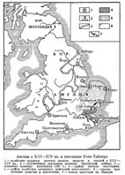

главная  персоналии
персоналии  Уот Тайлер
Уот Тайлер
главная |

Личность в историикраткая энциклопедияПроект «Личность в истории» посвящен людям — современникам грандиозных исторических событий, носителям редких качеств или людям, взгляды которых опередили их время. |
|||||
Коротко |
Статьи |
Персоналии |
Литература |
||
Уот Тайлер |
|||||
|
Авторы благодарят за помощь в подготовке материалов А. А. Баженову Васильев А. Е. |

Англия в XIII–XIV вв. и восстание Уота Тайлера. | ||||
Биографическая справкаУот Тайлер – лидер антифеодального восстания в Англии в 1381 г, по профессии – деревенский кровельщик. Восстание было вызвано непомерными налогами и сильными притеснениями со стороны феодальной верхушки и королевских властей. Его основными движущими силами были широкие крестьянства и городская беднота. Восставшим удалось захватить Лондон и убедить короля вступить в переговоры. Однако вскоре, во время переговоров, Уот Тайлер был убит мэром Лондона. Король нарушил все свои обещания данные крестьянам, а восстание было жестоко подавлено силами феодальных войск. Цитаты«Крестьяне прогнали сборщиков податей и некоторых из них убили. Восстание сразу же приняло ярко выраженный антифеодальный характер. Оно быстро охватило большую часть графств Англии (25 графств из 40). Крестьянские отряды громили монастыри и феодальные поместья и жгли документы, фиксировавшие крестьянские повинности. Особенную их ненависть вызывали церковные феодалы — епископы и аббаты, а также королевские судьи и другие представители государственного аппарата; их крестьяне считали главными виновниками бедствий народа. Крестьян поддерживала городская беднота соседних городов.». (История средних веков (в двух томах ). «Двумя большими отрядами крестьяне Эссекса и Кента подступили к Лондону. Их целью было встретиться с Ричардом II и попросить его облегчить их положение. Крестьяне в массе верили в «доброго короля» и приписывали все свои беды его дурным советникам. Вопреки приказу мэра городская беднота не позволила запереть ворота перед восставшими. Вступив в Лондон, крестьяне стали жечь и разрушать дома самых ненавистных народу королевских советников; разбив тюрьмы, они выпустили заключенных. Лондон оказался по власти крестьян. Король фактически стал их пленником. Они предали казни как «изменников» особенно ненавистных вельмож, в том число и главу английской церкви архиепископа Кентерберийского Седбери, который был одновременно канцлером Англии. (История средних веков (в двух томах). «В Лондоне крупное восстание возникло в тот момент, когда рабочие взбунтовались против очередного ущемления их интересов и введения нового, так называемого, подушного налога. Особенность этого движения состояла в том, что выступления ремесленников и городских рабочих слились воедино с крестьянским бунтом. У восстания были свои лидеры: Уот Тайлер, который потребовал отмены "Рабочего законодательства" и освобождения крестьян, и Джон Болл, "бедный священник", который придумал впечатляющую формулу: "Когда Адам мотыжил, а Ева пряла, кто тогда был дворянином?" Мятежники на продолжительное время захватили Лондон, но в конце концов были побеждены, и последовали репрессии. .» (Жак Лё Гофф. Рождение Европы / Пер. с фр. А.И.Поповой. Список литературы
|
|||||
|
{kind=link}